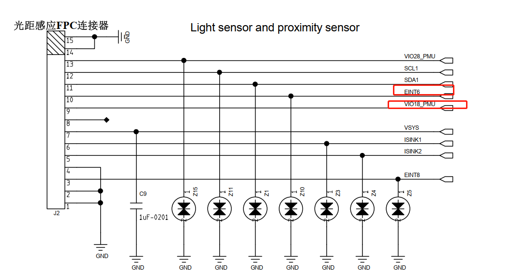

概述
Sensor型号汇总
型号
ITEM |
M8 |
M50 |
|---|---|---|
ACCGYRO |
sc7a20 |
一供：BMI160 二供：qmi8658c |
ALSPS |
LTR-553ALS |
ltr559 |
MAGNETOMETER |
MMC5603NJL |
MMC5603NJL |
硬件
1.ACCGYRO
ITEM |
sc7a20 |
qmi8658c |
|---|---|---|
I2C总线及地址 |
i2c1 0x18 |
i2c1 0x68 |
eint_num中断号 |
EINT12 |
EINT12 |
供电 |
VIO18_PUM |
VIO18_PUM |

2.ALSPS
ITEM |
LTR-553ALS |
|---|---|
I2C总线及地址 |
i2c1 0x23 |
eint_num中断号 |
EINT6 |
供电 |
VIO18_PUM |

3.MAGNETOMETER
ITEM |
MMC5603NJL |
|---|---|
I2C总线及地址 |
i2c1 0x30 |
供电 |
VIO18_PUM |

规格书
0005_LTR-553ALS-01_DS_V1.2_300501990000169.pdf
0005_SC7A20TR_士兰微.pdf